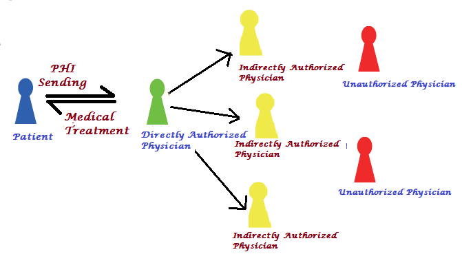

|
|
| Patient Self-controllable and
Multi-level Privacy-preserving Cooperative
Authentication
|
|
| Abstract:
Distributed m-healthcare cloud computing system significantly facilitates efficient patient treatment for medical consultation by sharing personal health information
among healthcare providers. However, it brings about the challenge of keeping both the data confidentiality and patients’
identity privacy simultaneously. Many existing access control
and anonymous authentication schemes cannot be straightforwardly
exploited. To solve the problem, in this paper, a novel
authorized accessible privacy model (AAPM) is established.
Patients can authorize physicians by setting an access tree
supporting flexible threshold predicates. Then, based on it, by
devising a new technique of attribute-based designated verifier
signature, a patient selfcontrollable multi-level
privacy-preserving cooperative authentication scheme (PSMPA)
realizing three levels of security and privacy requirement in
distributed m-healthcare cloud computing system is proposed. The
directly authorized physicians, the indirectly authorized
physicians and the unauthorized persons in medical consultation
can respectively decipher the personal health information and/or
verify patients’ identities by satisfying the access tree with
their own attribute sets. Finally, the formal security proof and
simulation results illustrate our scheme can resist various
kinds of attacks and far outperforms the previous ones in terms
of computational, communication and storage overhead. |
|  |
|